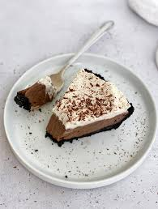

Oreo Pie

Ingredients needed for pie
Oreo's
Butter
Cook & Serve Chocolate Pudding
Heavy Whipping Cream
Whole Milk
Cocoa Powder
Espresso Powder
Salt
Ingredients Needed for Whip Cream
Heavy Whipping Cream
Powdered Sugar
Vanilla, I try to use vanilla paste because the flecks make it so pretty
Step by step Instructions
Preheat oven to 350 oF
- Make oreo crust:
- In a food processor process Oreo's and butter until it becomes a fine grainy texture. You can also crush oreos in a ziplock bag and then add butter and mix in a bowl.
- Press into pie plate and bake for 8 minutes. Set aside and allow to cool completely.
- Make Chocolate Pie Filling:
- Empty both boxes of pudding mix into a large heavy saucepan. Stir in cream, milk, espresso powder and salt. Cook over medium heat, stirring constantly until mixture thickens and comes to a full boil. It will thicken more as it sets.
- Remove from heat. Pour into oreo crust. Place plastic wrap directly on top of the pudding so that a film is not created on the top. Refrigerate for at least 3 hours to set.
- Make Whip Cream:
- Whip heavy cream, powdered sugar and vanilla extract until stiff peaks form.
- Spread whipping cream over the top of the pie and sprinkle chocolate shavings or curls on top.
- After prep:
- filling is meant for a 9" pie pan
- Cooking:
- Cook time should be near 10 minutes
- Be sure to then chill and rest the pie before serving
- You can also make the pie a day in advance but no earlier than twelve hours